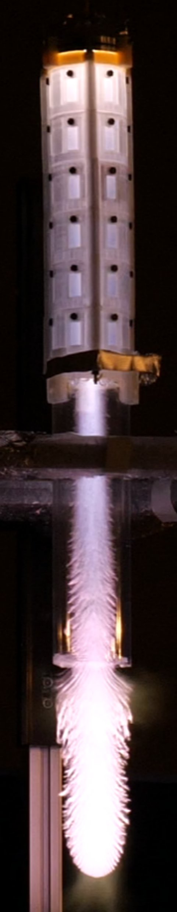

専門
例：ビーム制御、数値解析、実験計測など。 自分の研究を支える柱を書きます。
ここに研究テーマの一文要約を書きます。 研究の目的、社会的な意義、どんな技術で挑んでいるのかを、 短く力強く見せる領域です。

Current Focus
複雑な現象を、設計に使える知識へ。研究背景、所属、専門分野を紹介します。 Apple風の見せ方では、説明を詰め込みすぎず、 重要な言葉だけを残すのが効きます。
例：ビーム制御、数値解析、実験計測など。 自分の研究を支える柱を書きます。
何を明らかにしたいのか。 学術的な問いと工学的な狙いを簡潔に示します。
理論、計算、実験などのアプローチを整理して見せます。
現在取り組んでいる研究テーマを紹介します。 研究の狙い、方法、得られた知見を簡潔にまとめます。
背景、問題設定、アプローチ、 得られた知見を2〜3文でまとめます。
別の研究項目や、 今後展開したい内容をここに載せます。
論文、発表、共同研究などに接続する内容を入れても自然です。
実績や成果をカードで見せます。 数字があると強いですが、意味も添えるとさらに伝わります。
主要な業績、学会発表、受賞などをまとめます。
共同研究、開発中の装置、解析コードなどを紹介します。
次に取り組む課題や、 研究の社会的な広がりを記述します。